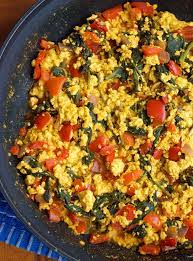

Tofu Scramble

Easy to make breakfast staple that is a great substitution
for scrambled eggs
Ingredients
- Tofu
- Frozen spinach
- Canned tomato chunks
- Olive oil
Directions
- Thaw the frozen block of spinach
- Lightly coat the pan with olive oil
- Cut the tofu up into small chunks
- Add the chunked tofu, spinach and tomato chunks to pan
- Cook till most moisture from ingredients have evaporated
- Serve with a side of toast or in a burrito
Home